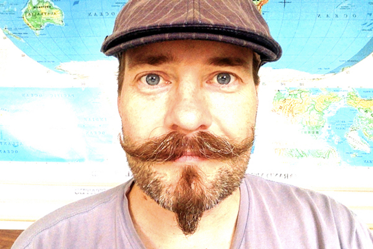

About Me

As a child I was offered so many opportunities, I did not even recognize them as such. I was afforded the ability to fail, and did so, over and over again. In my late twenties I found coding, and started to develop success. Building code also helped me to build power, and altered the way in which I interact with our world and within my community. I know now that opportunity is far more rare and special than I understood as a child. I have spent the last 7 years of my professional life understanding the challenges faced by underrepresented communities in the technology development space and working to recreate the kind of opportunities I was given.
In my extended college years, I studied philosophy, religion, astronomy, physics, and engineering. But it was my childhood exposure to computer programming from which I forged a career. That skill, latent for over a decade, awoke and gave me power and opened opportunities.
The skills I learned running programs on our Apple IIe as a child led to further chances to grow, learn, and connect. I got to work with the top scientists in their respective fields, devising cutting edge solutions at Lawrence Berkley National Lab. I had the privilege to leave that dream job to seek another; creating my own technology and developing an online platform to connect employees with training.
Programming skills have placed me in the decision-making team within every organization with which I have worked. I skipped the years of paying dues in every industry - from healthcare to education, and technology to politics - and had the opportunity to see my work directly and immediately impact the mission.
By 2012, when a company I helped to form was sold, those skills had also given me financial power. It was then that I started Code for Progress, an organization designed to assist others in building the same types of power I found in coding. I designed that program to address some of the imbalance in opportunity, and help individuals build power for themselves and within their communities.
I have had many successes, and a good deal more challenges in the 5 years I've run Code for Progress, but the experience and understanding I've gained, I consider some of my most valuable assets. I am now eager to place the full body of that experience, all of my energy, and my hopeful spirit into bringing the program to Philadelphia.
Code for Progress Philadelphia's intent to provide exposure, guidance, and a runway clear of obstacles - will help to supply some of the elements necessary to build opportunity. It is clear that where these elements come together, power is built.